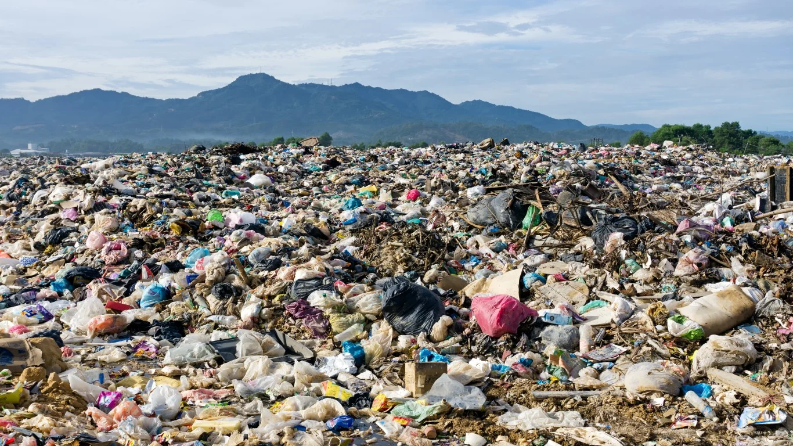

Children are taught to recycle. It is heavily encouraged in big cities. Sadly, it hasn't worked.
9%
The rest could end up here.
It could also end up here.
Lots of recycled material is contaminated with food, labels, or other garbage waste, which can contaminate the rest of the recyclables or damage equipment. Plastic that degrades and exposes toxic chemicals cannot be recycled, and different plastic types cannot be treated together because they have different properties. It is also expensive to sort, clean, and process thousands of different recyclable items, so many items people think are acceptable still end up being rejected.
In the USA...
21%
of recyclables are captured.
This number is trending downward in recent years.
80%
of recyclables are lost to trash bins inside homes.
Imagine 7 out of 10 cardboard boxes and 4 out of 5 cans wasted, all because of inefficiency and a lack of local services.

This landfill you see is in the US. It is caused by access barriers, such as lack of resources for multifamily homes, insufficient communication about local recycling, or simply putting the recyclables in the wrong place.
One glaring issue is lack of trust in the public to recycle.
Where I live, Racine County:
40%
of recyclables are lost to landfills, roads, and wind blown across yards where I call home.
The Racine County Eye cites improper disposal and missed collection as the primary sources of this statistic, and improper recyclables are typically left behind with red penalty tags, including bagged recyclables.